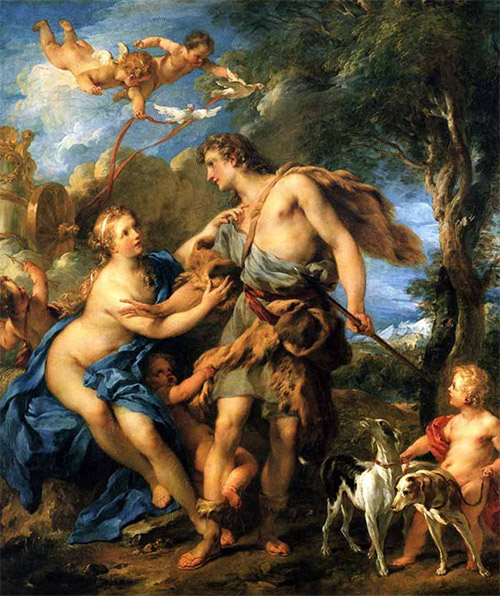

Nữ thần Tình yêu và Sắc đẹp Aphrodite quyền lực to lớn đến như thế, có thể bắt mọi vị thần, kể cả thần Zeus cho đến những người trần thế phải khuất phục, phải đau khổ vì Tình yêu và Sắc đẹp, thế mà bản thân nữ thần lại không tránh khỏi tai họa đó, lại không chế ngự được quyền lực của mình để đến nỗi mình cũng bị đau khổ vì Tình yêu và Sắc đẹp! Adonis là chàng trai đã gây ra cho vị nữ thần danh tiếng này những giọt nước mắt đau thương. Chuyện về gia đình chàng cũng hơi lôi thôi. Cha Adonis là Cyniras (Kyniras) vua đảo Chypre. Ông sinh được một người con gái đẹp đẽ tuyệt vời, tên gọi là Myrrha. Tự hào về người con gái nhan sắc đó, ông đã có lần, thậm chí nhiều lần, cho rằng con gái ông là đẹp nhất thế gian. Đó là một điều ngu xuẩn của kẻ hợm mình song dẫu sao cũng còn tha thứ được. Nhưng tệ hại hơn nữa Cyniras như ếch ngồi đáy giếng đã dám tự xưng không biết ngượng mồm, cho con gái mình là đẹp hơn ai hết, hơn cả nữ thần Aphrodite. Đúng là “coi trời bằng vung”. Vì thế Cyniras bị trừng phạt. Nữ thần Aphrodite bằng những phép mầu nhiệm của mình, làm cho Cyniras mất trí, mất trí đến nỗi tưởng con gái mình là vợ mình. Và Adonis đã ra đời trong sự chăm sóc của người mẹ là nàng Myrrha. Nhưng Myrrha vừa sinh con xong là bị vua cha đuổi ra khỏi nhà. Nàng bế con đi lang thang hết nơi này đến nơi khác. Một hôm đi đến một ngọn đồi nàng kiệt sức chết, và biến thành một thứ cây có nhựa thơm mà ngày nay gọi là cây myrrhe. Nữ thần Aphrodite động lòng trắc ẩn, đón lấy Adonis đem về nuôi. Nhưng lại trao cho nữ thần Perséphone vợ của thần Hadès dưới âm phủ nuôi hộ. Ít lâu sau Aphrodite xuống âm phủ xin lại Adonis thì nữ thần Perséphone không trả, nhất quyết không trả. Không trả chỉ vì một lẽ rất vô lý mà không dám nói ra: Adonis đẹp quá, đẹp đến nỗi Perséphone yêu, quá yêu, không muốn cho chàng trai đó thoát khỏi tay mình. Hai vị nữ thần cãi cọ với nhau mất mặn mất nhạt, cuối cùng phải đưa lên thần Zeus phân xử. Zeus, quả xứng đáng là bậc phụ vương của các thần, quyết định: Adonis luân phiên ở với mỗi vị nữ thần nửa năm. Mùa xuân, mùa hè ở với Aphrodite; mùa thu, mùa đông ở với Perséphone.
Năm ấy, vào độ đầu xuân, Adonis sống với Aphrodite. Khó mà nói được vị nữ thần này yêu Adonis đến như thế nào. Tất nhiên nếu không yêu thì đã chẳng có chuyện tranh giành với Perséphone. Nàng yêu Adonis say đắm đến nỗi quên cả trở về cung điện Olympe, quên cả hòn đảo Cythère122 đầy hoa nở và biết bao nhiêu ngày hội lễ ở nơi này, nơi khác.
Aphrodite lúc nào cũng quấn quít bên Adonis. Nàng yêu chàng trai ấy quá đỗi, đến mức mà chỉ vắng chàng một lát là nàng đã nơm nớp lo sợ, tưởng tượng ra bao nhiêu điều rủi ro xảy ra đối với chàng. Mỗi khi Adonis đi săn là Aphrodite cũng đi theo, mặc dù đi săn không phải là thú vui của nàng. Nàng quên cả việc giữ gìn sắc đẹp, theo bước Adonis vào rừng, đày đọa mình dưới nắng trưa mưa sớm. Nàng căn dặn Adonis không được săn thú dữ mà chỉ được săn bắt những con vật bé nhỏ, hiền lành, không thể gây nguy hiểm cho mình như: Hươu, nai, chồn, cáo, thỏ, gà... nàng cầu khẩn các vị thần Olympe phù hộ cho Adonis thoát khỏi những chuyện không may có thể xảy ra trong khi chàng mải mê săn bắn.

Aphrodite lúc nào cũng quấn quít bên Adonis
Nhưng mọi sự tính toán, lo xa của nàng vẫn không giúp chàng thoát khỏi tai nạn. Và xót xa thay, tai họa ấy lại là điều mà Aphrodite đã lường tính trước, đã từng căn dặn Adonis tưởng như đến đứt đầu lưỡi. Đó là một ngày đẹp trời, Adonis đi vào rừng săn. Nhưng hôm ấy không rõ chuyện gì Aphrodite không cùng chàng vào rừng được. Tuy nhiên điều đó không hề làm Adonis kém phần say sưa, hăng hái trong thú vui săn bắn. Chàng đã bắn được khá nhiều chồn, thỏ, gà rừng... Bỗng đâu từ một bụi rậm không xa chàng lắm chạy xồ ra một con lợn rừng. Con lợn hộc lên lướt qua trước mặt chàng. Bầy chó sủa ầm lên và rượt theo. Adonis sung sướng, chắc mẩm chuyến này chàng sẽ hạ được con mồi béo bở, lập một chiến công, vì xưa nay chàng chưa bao giờ hạ được một con thú to lớn hung dữ như con lợn rừng. Đàn chó lao vút đi và chẳng mấy chốc đã bổ vây quanh con lợn. Adonis chạy tới, tay cầm lao nhọn. Vào lúc chàng vừa ngả người lấy đà thì con lợn lao mạnh ra, húc băng đi một con chó và phóng như bay vào người chàng. Đầu lợn rắn như đá với những chiếc răng nanh nhọn hoắt đâm bổ vào đùi chàng, sục vào bụng chàng, Adonis ngã vật ra, máu đỏ phun, chảy lênh láng trên mặt đất. Con lợn vượt đi, thoát khỏi tai họa. Còn Adonis nằm đấy, bóng đen phủ kín mặt chàng.
Aphrodite được tin Adonis chết, bủn rủn cả người. Nàng cố nén đau thương lần vào khu rừng trên đảo Chypre tìm xác chàng thanh niên xinh đẹp, yêu dấu của mình. Nàng trèo đèo, lội suối, len lỏi qua các bụi gai rừng sắc nhọn. Đá cứng làm đôi chân nàng xinh xắn, nõn nà là như thế, mà dập nát, ứa máu. Gai rừng cào xé rách áo, làm xây xát da thịt nàng. Cuối cùng Aphrodite tìm được xác Adonis. Nàng ngồi xuống bên chàng khóc than thảm thiết, đưa tay vuốt mớ tóc xõa bết dính mồ hôi và đất bụi trên vầng trán cao đẹp của chàng, mớ tóc vô vàn thân yêu và quen thuộc đối với nàng. Nàng bế xác chàng trên tay đưa về làm lễ an táng. Người xưa kể, máu của Adonis nhỏ xuống trên đường đã làm mọc lên những bông hoa anémone123, một thứ hoa nở vào những ngày đầu xuân song sớm nở mà chóng tàn. Còn máu của Aphrodite do bị gai cào, đá cứa, nhỏ xuống những bông hoa (hồng) trắng biến thứ hoa này thành thứ hoa có màu hồng thắm, loại hoa của Tình yêu, Sắc đẹp và Tuổi trẻ. Thần Zeus thương người thanh niên trẻ đẹp, sớm phải lìa đời xuống vương quốc của thần Hadès, nên cứ như lệ thường lúc chàng còn sống cho chàng mỗi năm khi xuân về sống lại - phục sinh - để trở về với Aphrodite ở thế giới loài người. Có người lại kể Adonis chết vì thần Arès, “chồng” Aphrodite. Biết vợ mình đem lòng yêu say đắm Adonis, vị thần Chiến tranh-Arès nổi ghen, xúi một con lợn rừng lao bổ vào Adonis.
Có người lại nói, Zeus phân xử: Adonis sống với mỗi nữ thần một phần ba thời gian của một năm, còn lại thì tùy ý Adonis. Từ đó Adonis sống đúng một phần ba thời gian với Aphrodite, vì thế Perséphone ghen, xui Arès bày mưu giết chết Adonis. Người ta còn kể, không phải máu của Aphrodite đã nhuộm những bông hoa trắng thành bông hoa hồng, mà chính là máu của Adonis nhỏ xuống đất đã sinh ra thứ hoa đẹp đẽ, thanh cao đó.
Huyền thoại về Adonis gốc từ Syrie, phản ánh sự vận động của thiên nhiên: sinh - tử - tái sinh. Trong gia tài huyền thoại của nền văn minh Ai Cập, Lưỡng Hà có nhiều chuyện về cái chết và sự tái sinh của các vị thần. Những huyền thoại ấy đã du nhập vào Hy Lạp và được nhào nặn lại trong bối cảnh lịch sử-xã hội cụ thể của nền văn minh Hy Lạp. Môtíp sinh - tử - tái sinh của huyền thoại Christ trong Kinh Phúc Âm đã là ngọn nguồn của nhiều tập tục, nghi lễ của Thiên Chúa giáo. Môtíp này cũng đã du nhập vào các hình thành trong gia tài truyện cổ tích của nhiều dân tộc. Truyện Tấm Cám của chúng ta rõ ràng cũng có môtíp tái sinh.
Ngày nay trong văn học thế giới, Adonis chuyển nghĩa, chỉ một người thanh niên rất đẹp trai, đẹp trai hiếm thấy hoặc những người đàn ông hào hoa phong nhã.
[121] Tiếng Hy Lạp écho: tiếng vọng, tiếng vang.
[122] Nữ thần Aphrodite còn có một biệt danh là Cythérée.
[123] Từ điển Đào Duy Anh dịch: hoa bạch đầu ông, hoa thu mẫu đơn.